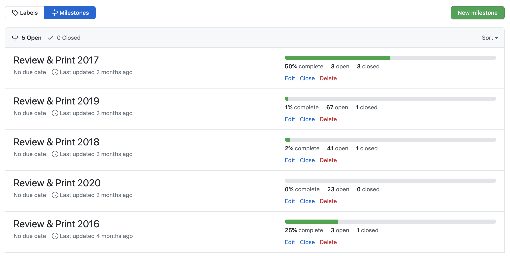
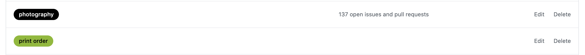
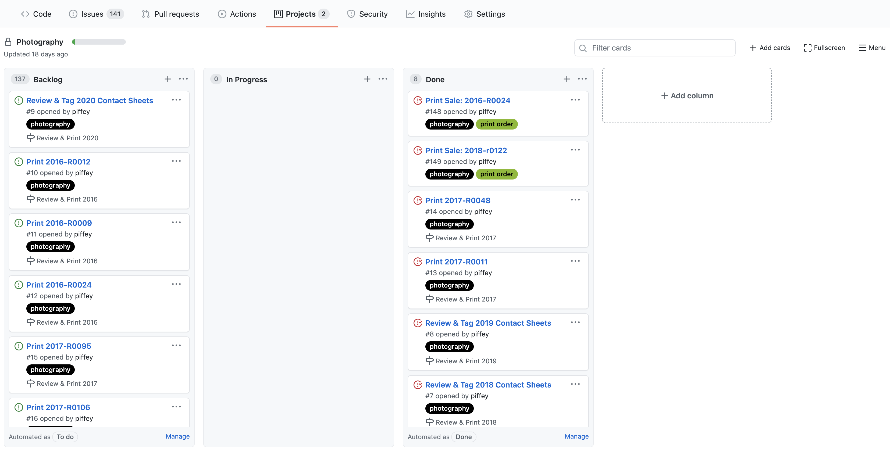
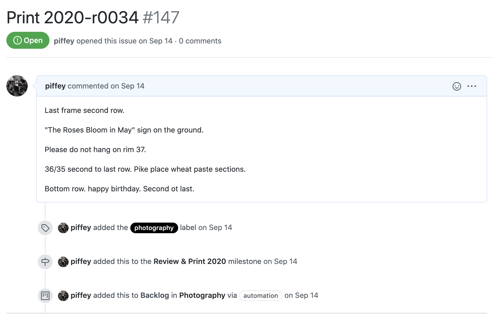
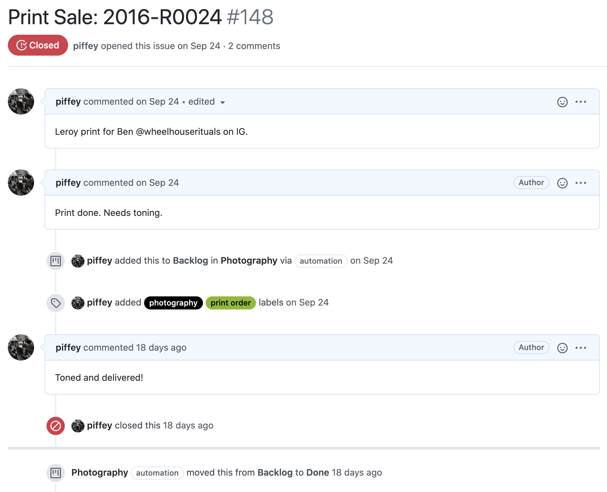

I tend to throw everything I can at whatever I am in doing in the moment. On top of that, my role in security research is time sensitive and sometimes means that in the race against the clock to map malicious infrastructure or reverse engineer a piece of malware before it’s too late I have to drop everything I’m doing and unfortunately ignore my photography. For this reason, I can’t keep everything in my head anymore and have chosen to adopt the models that I already use successfully for software to manage different parts of my life. This involves using an issue tracker and various resources to see how long something takes me to complete so that I can make more accurate estimates. Below I will show you how I have adopted using an issue tracking system to keep myself on track. Many people prefer a handwritten system of notes and journaling, something I also prefer, but I find being able to access this information from any phone or computer invaluable so have managed the digital aspects of it. By arranging and tracking all of my photography like I do my day job I can seamlessly transition to photography without any context switching. This is an immeasurable improvement on before as I can concentrate on the photography again instead of the switch to whatever tools I needed to now get in the groove of using in what was a siloed part of my life.
using github
Since I spend so much of my time on GitHub already, I created a software repository that acts as a notebook. The repository itself contains the plain text tagging of my contact sheets as explained in my archival system along with a number of other notes, books I want to buy, and everything else. Once again I use plain text documents here because I want to be able to access these documents in the same way I do my code every day and I know that plain text will always be supported on every single computer system I transfer the file to in the future. There is no software or document format that can go out of style or stop being maintained that would cause me to lose all the work I’ve put into my system.
With each GitHub repository comes an issue tracking system. If you currently write software for an open source project you are likely very familiar with this. For those that are not, an issue tracking or ticketing system is a way to submit small tasks and keep track of their status – open, in progress, finished. For starters I created a Photography project to generate a Kanban board which is my favorite way for keeping track of my tickets as I like the physical nature of seeing cards representing work to be done. Next I knew I wanted to create milestones to represent individual goals in my Photography project. As an example, I knew I wanted to do a full review of my archive and print what I found from each year so I created milestones for each year to encompass a goal underneath the larger Photography project.

On top of that I knew I wanted to track one-off requests for prints whenever I made a print sale so I made some appropriate labels to tag each of my submitted tickets with as I began to review my contact sheets and determine which frames I wanted to print.

Once that scaffolding is complete the only thing necessary for me to fill in then was all of the tickets for each individual contact sheet and the prints that I wanted to make from each. Once those tickets are in, the Kanban board auto-populates with my tickets and their status.

tickets
As I review contact sheets I create a ticket with a simple format that lets me know which negatives to select. On top of this I have also annotated the contact sheet with the Apple Photos markup feature on my phone to easily highlight what to print in a red box as I would previously do on my physical contact sheets. I make sure that every title mentions the contact sheet by label so that if I go back to print from that contact sheet again in the future I can find any old notes. Additionally, GitHub’s full text search engine makes finding anything a breeze in the future.

Once I have printed a photograph I can make notes as well as update its status. I use this most often when printing for an order to track when the person wants the print by, which contact sheet the image comes from, and whether or not the print is on the drying rack or in the queue to be toned. Once completed, I move the ticket to “Closed” and now have a history of all the prints I have ever sold.

actions
Lastly, and probably one of my favorite things, is I have a file of photography quotations that I find inspires me to work. GitHub has the Actions feature which allows any repository to run a specified action on its contents. Normally people use this to run testing on their software, but I instead have this set up to email me on occassion if I haven’t updated the issues in awhile and let me know that I have prints that need printing coupled with an inspiring quote from Garry Winogrand, Lee Friedlander, Henry Wessel Jr., Stephen Shore, or one of the other greats.